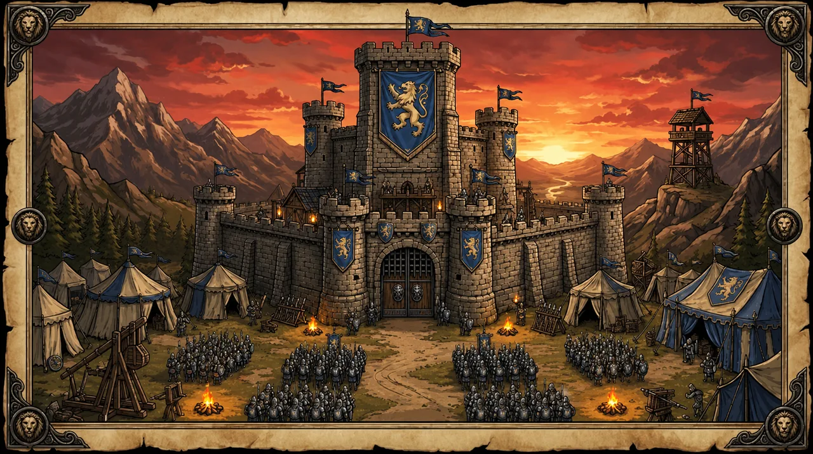

1. Frontend / Game Portal
React 웹 포털은 게임 진입 전 필요한 서비스 화면과 인증 상태를 담당했습니다. 사용자는 웹 포털에서 게임 정보를 확인하고, 로그인 상태에 따라 Hater 플레이 화면으로 진입할 수 있도록 구성했습니다.
Unity WebGL 게임 Hater를 웹 서비스로 전환하고, 이를 Egg Studio 플랫폼에 탑재해 브라우저에서 실행·배포·운영할 수 있도록 구축한 웹 게임 서비스화 프로젝트입니다.

Hater는 Unity WebGL 기반 중세 디펜스 게임이며, 저는 해당 게임을 웹 브라우저에서 별도 설치 없이 실행할 수 있도록 웹 서비스 형태로 전환하고, 이를 제공하는 Egg Studio 웹 게임 플랫폼 구축을 담당했습니다.
단순히 WebGL 빌드를 실행하는 페이지를 만드는 데 그치지 않고, 사용자가 웹 포털에서 게임 정보를 확인하고 로그인 후 게임에 진입하며, 랭킹·마이페이지·피드백·뉴스 기능을 이용할 수 있는 서비스 흐름을 구현했습니다.
또한 Hater 외의 다른 Unity WebGL 프로젝트도 Egg Studio 플랫폼에 탑재하여 실행을 검증하면서, 특정 게임 하나에 종속된 구조가 아니라 여러 웹 게임을 제공할 수 있는 플랫폼 형태로 확장 가능성을 확인했습니다.
저는 React 기반 웹 포털 구현, 인증 상태 기반 게임 진입 흐름, WebGL 빌드 서빙 구조, 배포 인프라, GitLab CI/CD 파이프라인 구성을 담당했습니다.
Unity WebGL 빌드를 웹 포털에서 실행할 수 있도록 게임 진입 페이지, 정적 리소스 경로, 라우팅 구조를 구성했습니다.
Hater를 대표 게임으로 제공하는 React 기반 웹 포털을 구현하고, 게임 소개·상세·플레이 진입·랭킹·마이페이지·피드백·뉴스 영역을 하나의 서비스 흐름으로 연결했습니다.
Hater 외 다른 WebGL 프로젝트도 플랫폼에 탑재하여 실행을 확인하며, 단일 게임이 아닌 여러 게임을 제공할 수 있는 구조를 검증했습니다.
Docker, Nginx, AWS, GitLab Runner 기반으로 빌드·배포·업데이트 과정을 반복 가능하게 구성했습니다.
React 웹 포털은 게임 진입 전 필요한 서비스 화면과 인증 상태를 담당했습니다. 사용자는 웹 포털에서 게임 정보를 확인하고, 로그인 상태에 따라 Hater 플레이 화면으로 진입할 수 있도록 구성했습니다.
Unity WebGL 빌드는 S3에 업로드해 정적 리소스로 제공할 수 있도록 구성했습니다. WebGL 실행에 필요한 .wasm, .data, .framework.js 파일을 웹 서비스 구조 안에서 안정적으로 불러올 수 있도록 실행 경로와 리소스 제공 방식을 분리했습니다.
Docker Compose 기반 실행 환경과 GitLab CI/CD를 연결해 프론트엔드, 백엔드, WebGL 리소스를 반복적으로 빌드·배포할 수 있는 흐름을 구성했습니다. 이를 통해 수정 범위에 따라 필요한 구성 요소를 안정적으로 배포할 수 있도록 했습니다.
Unity WebGL 빌드는 일반 React 페이지와 달리 .wasm, .data, .framework.js 같은 정적 리소스를 포함하고 있어 실행 경로와 캐시 전략이 중요했습니다.
WebGL 실행 경로를 빌드 환경변수로 분리하고, S3 자동 업로드 파이프라인과 CloudFront 캐시 전략을 함께 검토했습니다.
사용자가 게임에 진입한 뒤 토큰이 만료되거나 세션이 유효하지 않으면 플레이 경험이 끊길 수 있었습니다.
게임 진입 전 세션 검증을 적용하고, 토큰 리프레시와 Heartbeat / Ping 기반 온라인 상태 확인 흐름을 구성했습니다.
짧은 프로젝트 기간 안에서 프론트엔드, 백엔드, WebGL 리소스를 함께 관리해야 했고, 매번 전체 배포를 수행하면 배포 범위와 오류 가능성이 커질 수 있었습니다.
GitLab CI/CD에서 변경된 컴포넌트만 선택적으로 재배포하는 부분 배포 로직을 설계하고, Kaniko 이미지 빌드와 Docker Compose 기반 배포 환경을 구성했습니다.
배포 이후 단순 실행 여부를 확인하는 것을 넘어, 백엔드 상태와 서비스 흐름을 관찰할 수 있는 기반이 필요했습니다.
Prometheus와 Spring 메트릭 수집을 연결해 백엔드 상태를 확인할 수 있는 모니터링 기반을 마련했습니다.
Unity WebGL 빌드를 웹 포털 안에서 실행할 수 있도록 정적 리소스 경로, 진입 페이지, 라우팅 구조를 구성했습니다.
로그인 상태와 세션 검증 결과에 따라 게임 플레이 진입을 제어해, 단순 실행 페이지가 아닌 서비스형 게임 흐름을 구현했습니다.
Hater 외 다른 WebGL 프로젝트도 Egg Studio 플랫폼에 탑재해 실행을 확인하며, 플랫폼 확장 가능성을 검증했습니다.
데모, 정식 버전, 업데이트 배포 과정을 GitLab Runner 기반 배포 흐름으로 관리했습니다.
2026년 5월 13일 데모 버전 공개를 시작으로, 5월 18일 정식 버전 배포, 5월 20일 2.0.0 업데이트까지 이어지는 릴리즈 흐름을 완료했습니다.
이 과정에서 Hater를 단순히 Unity WebGL 빌드 파일로 실행하는 수준에 그치지 않고, React 웹 포털, 인증 기반 게임 진입, WebGL 리소스 제공, API 연동, 배포 자동화, 모니터링 기반이 연결된 웹게임 서비스 형태로 구성했습니다.
사용자는 별도 설치 없이 브라우저에서 Hater에 접근할 수 있게 되었고, 로그인 상태에 따라 게임에 진입하며 랭킹, 마이페이지, 피드백, 뉴스 기능을 함께 이용할 수 있는 서비스 흐름을 경험할 수 있게 되었습니다.
또한 Hater 외 다른 WebGL 프로젝트도 Egg Studio 플랫폼에 탑재해 실행을 확인하면서, 특정 게임 하나에 종속된 구조가 아니라 여러 WebGL 게임을 수용할 수 있는 플랫폼 구조로 확장 가능성을 검증했습니다.
이 프로젝트를 통해 Unity WebGL 게임을 실행 가능한 빌드 파일로 제공하는 것과, 실제 웹 서비스처럼 운영하는 것은 다른 문제라는 점을 경험했습니다. 게임을 안정적으로 제공하기 위해서는 프론트엔드 화면 구현뿐 아니라 인증/세션 흐름, 정적 리소스 제공, 도메인, 캐시, 배포 자동화, 운영 모니터링이 하나의 흐름으로 연결되어야 했습니다.
특히 웹게임 서비스에서는 사용자가 게임에 진입하기 전후의 경험이 끊기지 않는 것이 중요하다는 점을 느꼈습니다. 이후에는 WebGL 리소스 캐시 정책, 배포 롤백 전략, 사용자 플레이 로그 기반 모니터링까지 확장해 더 안정적인 게임 서비스 운영 구조로 발전시키고 싶습니다.
Unity WebGL 빌드에서 확인한 실제 플레이 흐름입니다. 병력 배치 화면과 전투 진행 장면을 통해 웹 포털 이후 연결되는 게임 경험을 함께 보여줍니다.
React 웹 포털에서 구현한 주요 사용자 흐름입니다. 게임 소개와 진입, 인증, 마이페이지, 피드백까지 웹게임을 서비스 형태로 이용하는 데 필요한 화면을 구성했습니다.